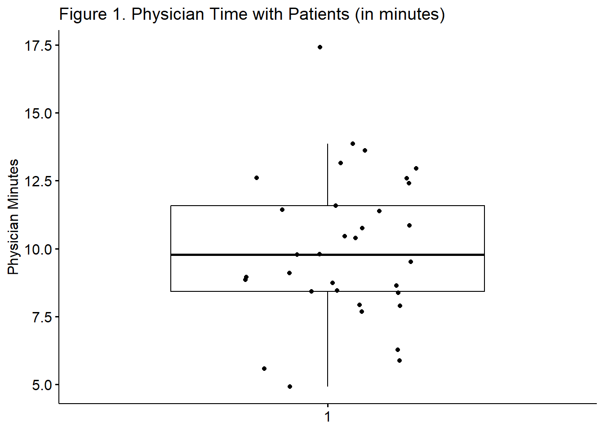
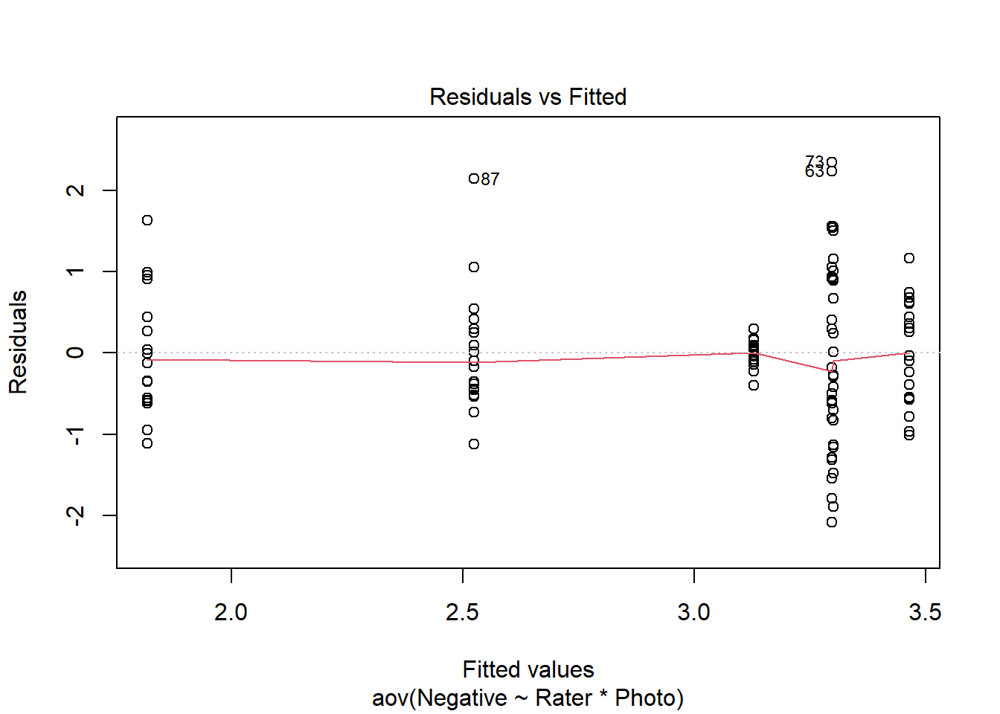
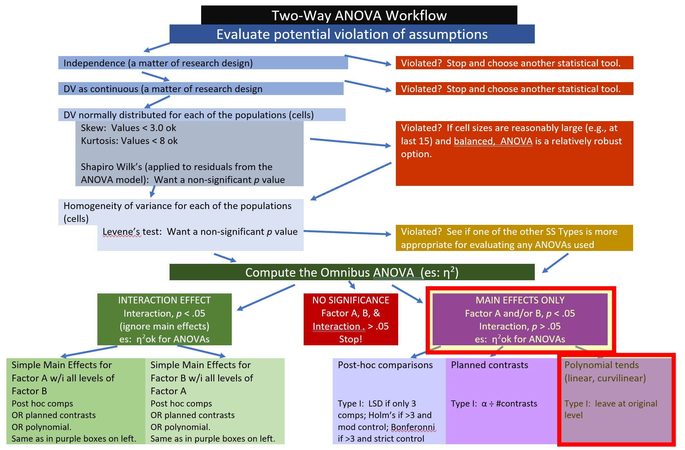

Chapter 5 Factorial (Between-Subjects) ANOVA
In this lesson we conduct a 3X2 ANOVA. The lesson is long and somewhat complicated. We will
- Work an actual example from the literature.
- “by hand,” and
- with R packages
- I will also demonstrate
- several options for exploring interaction effects, and
- several options for exploring main effects.
- Exploring these options will allow us to:
- Gain familiarity with the concepts central to multi-factor ANOVAs.
- Explore tools for analyzing the complexity in designs.
The complexity is that not all of these things need to be conducted for every analysis. The Two-Way ANOVA Decision-Tree is provided to help you map a way through your own analyses. I will periodically indicate this map in the lesson so that we can more easily keep track of where we are in the process.
5.2 Introducing Factorial ANOVA
My approach to teaching is to address the conceptual as we work problems. That said, there are some critical ideas we should address first.
ANOVA is for experiments (or arguably closely related designs). As we get into the assumptions you’ll see that it has some interesting ones (e.g., there should be an equal/equivalent number of cases per cell). To the degree that we violate these assumptions, we should locate alternative statistical approaches where these assumptions are relaxed.
Factorial: the term used when there are two or more independent variables (the factors). The factors could be between-groups, within-groups, repeated measures, or a combination of between and within.
- Independent factorial design: several IVs (predictors/factors) and each has been measured using different participants (between groups).
- Related factorial design: several IVs (factors/predictors) have been measured, but the same participants have been used in all conditions (repeated measures).
- Mixed design: several IVs (factors/predictors) have been measured; some with different participants whereas others use the same participants. A combo of independent (between) and related (within) designs.
- Factor naming follows a number/levels convention.
- Today’s example is a 3X2 ANOVA. We know there are two factors that have three and two levels, respectively: Ethnicity has three levels representing the two ethnic groups that were in prior conflict (Marudese, Dayaknese) and a third group who was uninvolved in the conflict (Javanese); Photo stimulus has two levels representing members of the two ethnic groups that were in prior conflict (Madurese, Dayaknese);
Moderator is what creates an interaction. Below are traditional representations of the statistical and conceptual figures of interaction effects. We will say that Factor B, moderates the relationship between Factor A/IV and the DV.
In a later lesson we work an ANCOVA – where we will distinguish between a moderator and a covariate. In regression models, you will likely be introduced to the mediator.
Graphic representations of a moderated relationship?
5.2.1 Workflow for Two-Way ANOVA
The following is a proposed workflow for conducting a two-way ANOVA.
An image of a workflow for the two-way ANOVA
Steps of the workflow include:
- Enter data
- seems straightforward; understanding the format of data can often provide clues as to which ANOVA/statistic to use
- predictors should formatted as as factors (ordered or unordered); the dependent variable should be continuously scaled
- Explore data
- graphing the data
- computing descriptive statistics
- check distributional assumptions
- use Levene’s test to check for homogeneity of variance
- use Shapiro Wilks to check for normality
- Construct or choose contrasts
- select contrasts & specify for all of the independent variables in your analysis
- if you want to use Type III sums of squares, contrasts must be orthogonal
- Compute the omnibus ANOVA
- Depending on what you found in the data exploration phase, you may need to run a robust version of the test
- Follow-up testing based on significant main or interaction effects
- significant interactions require test of simple main effects which could be urther explored with contrasts, posthoc acomparisons, and/or polynomials
- the exact methods you choose will depend upon the tests of assumptions during data exploration
- Managing Type I error
5.3 Research Vignette
The research vignette for this example was located in Kalimantan, Indonesia and focused on bias in young people from three ethnic groups. The Madurese and Dayaknese groups were engaged in ethnic conflict that spanned 1996 to 2001. The last incidence of mass violence was in 2001 where approximately 500 people (mostly from the Madurese ethnic group)were expelled from the province. Ramdhani et al.’s (2018) research hypotheses were based on the roles of the three ethnic groups in the study. The Madurese appear to be viewed as the transgressors when they occupied lands and took employment and business opportunities from the Dayaknese. Ramdhani et al. also included a third group who were not involved in the conflict (Javanese). The research participants were students studying in Yogyakara who were not involved in the conflict. They included 39 Madurese, 35 Dyaknese, and 37 Javanese; 83 were male and 28 were female.
In the study (Ramdhani et al., 2018), participants viewed facial pictures of three men and three women (in traditional dress) from each ethnic group (6 photos per ethnic group). Participant were asked, “How do you feel when you see this photo? Please indicate your answers based on your actual feelings.” Participants responded on a 7-point Likert scale ranging from 1 (strongly disagree) to 7 (strongly agree. Higher scores indicated ratings of higher intensity on that scale. The two scales included the following words:
- Positive: friendly, kind, helpful, happy
- Negative: disgusting, suspicious, hateful, angry
Below is script to simulate data for the negative reactions variable from the information available from the manuscript (Ramdhani et al., 2018).
library(tidyverse)
set.seed(210731)
Negative<-round(c(rnorm(17,mean=1.91,sd=0.73),rnorm(18,mean=3.16,sd=0.19),rnorm(19, mean=3.3, sd=1.05), rnorm(20, mean=3.00, sd=1.07), rnorm(18, mean=2.64, sd=0.95), rnorm(19, mean=2.99, sd=0.80)),3) #sample size, M and SD for each cell; this will put it in a long file
Positive<-round(c(rnorm(17,mean=4.99,sd=1.38),rnorm(18,mean=3.83,sd=1.13),rnorm(19, mean=4.2, sd=0.82), rnorm(20, mean=4.19, sd=0.91), rnorm(18, mean=4.17, sd=0.60), rnorm(19, mean=3.26, sd=0.94)),3) #sample size, M and SD for each cell; this will put it in a long file
ID <- factor(seq(1,111))
Rater <- c(rep("Dayaknese",35), rep("Madurese", 39), rep ("Javanese", 37))
Photo <- c(rep("Dayaknese", 17), rep("Madurese", 18), rep("Dayaknese", 19), rep("Madurese", 20), rep("Dayaknese", 18), rep("Madurese", 19))
Ramdhani_df<- data.frame(ID, Negative, Positive, Rater, Photo) #groups the 3 variables into a single df: ID#, DV, condition
#ANOVAresults<-aov(Negative~Rater*Photo, Ramdhani_df) #runs the ANOVA -- I used this in the simulation to check my work
#summary(ANOVAresults) #ANOVA output
#model.tables(ANOVAresults,"means") #extracts the means for the 3 groupsFor two-way ANOVA our variables need to be properly formatted. In our case:
- Negative is a continuously scaled DV and should be num
- Positive is a continuously scaled DV and should be num
- Rater should be an unordered factor
- Photo should be an unordered facor
str(Ramdhani_df)'data.frame': 111 obs. of 5 variables:
$ ID : Factor w/ 111 levels "1","2","3","4",..: 1 2 3 4 5 6 7 8 9 10 ...
$ Negative: num 2.768 1.811 0.869 1.857 2.087 ...
$ Positive: num 5.91 5.23 3.54 5.63 5.44 ...
$ Rater : chr "Dayaknese" "Dayaknese" "Dayaknese" "Dayaknese" ...
$ Photo : chr "Dayaknese" "Dayaknese" "Dayaknese" "Dayaknese" ...Our Negative variable is correctly formatted. Let’s reformat Numeric and Photo to be factors. And ask for the structure again. In the absence of instruction, R will order the factors alphabetically. In this case this is fine. If we had ordered factors such as dosage (placebo, lo, hi) we would want to specify the order.
Ramdhani_df[,'Rater'] <- as.factor(Ramdhani_df[,'Rater'])
Ramdhani_df[,'Photo'] <- as.factor(Ramdhani_df[,'Photo'])
str(Ramdhani_df)'data.frame': 111 obs. of 5 variables:
$ ID : Factor w/ 111 levels "1","2","3","4",..: 1 2 3 4 5 6 7 8 9 10 ...
$ Negative: num 2.768 1.811 0.869 1.857 2.087 ...
$ Positive: num 5.91 5.23 3.54 5.63 5.44 ...
$ Rater : Factor w/ 3 levels "Dayaknese","Javanese",..: 1 1 1 1 1 1 1 1 1 1 ...
$ Photo : Factor w/ 2 levels "Dayaknese","Madurese": 1 1 1 1 1 1 1 1 1 1 ...If you want to export this data as a file to your computer, remove the hashtags to save it (and re-import it) as a .csv (“Excel lite”) or .rds (R object) file. This is not a necessary step.
The code for .csv will likely lose the formatting (i.e., making the Rater and Photo variables factors), but it is easy to view in Excel.
#write the simulated data as a .csv
#write.table(Ramdhani_df, file="RamdhaniCSV.csv", sep=",", col.names=TRUE, row.names=FALSE)
#bring back the simulated dat from a .csv file
#Ramdhani_df <- read.csv ("RamdhaniCSV.csv", header = TRUE)
#str(Ramdhani_df)The code for the .rds file will retain the formatting of the variables, but is not easy to view outside of R.
#to save the df as an .rds (think "R object") file on your computer; it should save in the same file as the .rmd file you are working with
#saveRDS(Ramdhani_df, "Ramdhani_RDS.rds")
#bring back the simulated dat from an .rds file
#Ramdhani_RDS <- readRDS("Ramdhani_RDS.rds")
#str(Ramdhani_RDS)5.3.1 Preliminary exploration of our research vignette
Let’s first examine the descriptive statistic (e.g., means of Negative) by group. We can use the describeBy() function from the psych package.
library(psych)
negative.descripts <- psych::describeBy(Negative ~ Rater + Photo, mat = TRUE, data = Ramdhani_df, digits = 3) #digits allows us to round the output
negative.descripts item group1 group2 vars n mean sd median trimmed mad min
X11 1 Dayaknese Dayaknese 1 17 1.818 0.768 1.692 1.783 0.694 0.706
X12 2 Javanese Dayaknese 1 18 2.524 0.742 2.391 2.460 0.569 1.406
X13 3 Madurese Dayaknese 1 19 3.301 1.030 3.314 3.321 1.294 1.406
X14 4 Dayaknese Madurese 1 18 3.129 0.156 3.160 3.136 0.104 2.732
X15 5 Javanese Madurese 1 19 3.465 0.637 3.430 3.456 0.767 2.456
X16 6 Madurese Madurese 1 20 3.297 1.332 2.958 3.254 1.615 1.211
max range skew kurtosis se
X11 3.453 2.747 0.513 -0.881 0.186
X12 4.664 3.258 1.205 1.475 0.175
X13 4.854 3.448 -0.126 -1.267 0.236
X14 3.423 0.691 -0.623 0.481 0.037
X15 4.631 2.175 -0.010 -1.307 0.146
X16 5.641 4.430 0.215 -1.238 0.298The write.table() function can be a helpful way to export output to .csv files so that you can manipulate it into tables.
write.table(negative.descripts, file="NegativeDescripts.csv", sep=",", col.names=TRUE, row.names=FALSE)At this stage, it would be useful to plot our data. Figures can really help us conceptualize our analysis.
library(ggpubr)
ggboxplot(Ramdhani_df, x = "Rater", y = "Negative", color = "Photo",xlab = "Ethnicity of Rater", ylab = "Negative Reaction") Narrating results is sometimes made easier if variables are switched. There is usually not a right or wrong answer. Here is another view, switching the Rater and Photo predictors.
Narrating results is sometimes made easier if variables are switched. There is usually not a right or wrong answer. Here is another view, switching the Rater and Photo predictors.
ggboxplot(Ramdhani_df, x = "Photo", y = "Negative", color = "Rater", xlab = "Photo Stimulus",
ylab = "Negative Reaction")
ggline(Ramdhani_df, x = "Rater", y = "Negative", color = "Photo", xlab = "Ethnicity of Rater",
ylab = "Negative Reaction", add = c("mean_se", "dotplot"))Bin width defaults to 1/30 of the range of the data. Pick better value with `binwidth`.
#add this for a different color palette: palette = c("#00AFBB", "#E7B800")ggline(Ramdhani_df, x = "Photo", y = "Negative", color = "Rater", xlab = "Photo Stimulus",
ylab = "Negative Reaction", add = c("mean_se", "dotplot"))Bin width defaults to 1/30 of the range of the data. Pick better value with `binwidth`.
5.4 Working the Factorial ANOVA (by hand)
Before we work an ANOVA let’s take a moment to consider what we are doing and how it informs our decision-making. This figure (which already contains “the answers”) may help conceptualize how variance becomes partitioned.

Image of a flowchart that partitions variance from sums of squares totals to its component pieces
As in one-way ANOVA, we partition variance into total, model, and residual. However, we now further divide the \(SS_M\) into its respective factors A(column), B(row) and their a x b product.
In this, we begin to talk about main effects and interactions.
5.4.1 Sums of Squares Total
Our formula is the same as before:
\[SS_{T}= \sum (x_{i}-\bar{x}_{grand})^{2}\] Let’s calculate it for the Ramdhani et al. (2018) data. Our grand (i.e., overall) mean is
mean(Ramdhani_df$Negative)[1] 2.947369Subtracting the grand mean from each Accurate score yields a mean difference.
library(tidyverse)
Ramdhani_df <- Ramdhani_df %>%
mutate(m_dev = Negative-mean(Negative))Pop quiz: What’s the sum of our new m_dev variable?
Let’s find out!
sum(Ramdhani_df$m_dev)[1] -0.000000000000007549517If we square those mean deviations:
Ramdhani_df <- Ramdhani_df %>%
mutate(m_devSQ = m_dev^2)If we sum the squared mean deviations:
sum(Ramdhani_df$m_devSQ)[1] 114.7746This value, 114.775, the sum of squared deviations around the grand mean, is our \(SS_T\); the associated degrees of freedom is \(N\) - 1.
In factorial ANOVA, we divide \(SS_T\) into model/between sums of squares and residual/within sums of squares.
5.4.2 Sums of Squares for the Model
\[SS_{M}= \sum n_{k}(\bar{x}_{k}-\bar{x}_{grand})^{2}\]
The model generally represents the notion that the means are different than each other. We want the variation between our means to be greater than the variation within each of the groups from which our means are calculated.
In factorial, we need to obtain means for each of the combinations of the factors. We have a 3 x 2:
- Rater with three levels: Dayaknese, Madurese, Javanese
- Photo with two levels: Dayaknese, Madurese
Let’s repeat some code we used before to get the cell-level means and sample size.
psych::describeBy(Negative ~ Rater + Photo, mat = TRUE, data = Ramdhani_df, digits = 3) item group1 group2 vars n mean sd median trimmed mad min
X11 1 Dayaknese Dayaknese 1 17 1.818 0.768 1.692 1.783 0.694 0.706
X12 2 Javanese Dayaknese 1 18 2.524 0.742 2.391 2.460 0.569 1.406
X13 3 Madurese Dayaknese 1 19 3.301 1.030 3.314 3.321 1.294 1.406
X14 4 Dayaknese Madurese 1 18 3.129 0.156 3.160 3.136 0.104 2.732
X15 5 Javanese Madurese 1 19 3.465 0.637 3.430 3.456 0.767 2.456
X16 6 Madurese Madurese 1 20 3.297 1.332 2.958 3.254 1.615 1.211
max range skew kurtosis se
X11 3.453 2.747 0.513 -0.881 0.186
X12 4.664 3.258 1.205 1.475 0.175
X13 4.854 3.448 -0.126 -1.267 0.236
X14 3.423 0.691 -0.623 0.481 0.037
X15 4.631 2.175 -0.010 -1.307 0.146
X16 5.641 4.430 0.215 -1.238 0.298We also need the grand mean (i.e., the mean that disregards the factors).
mean(Ramdhani_df$Negative)[1] 2.947369This formula occurs in six chunks, representing the six cells of our designed. In each of the chunks we have the \(n\), group mean, and grand mean.
17*(1.818 - 2.947)^2 + 18*(2.524 - 2.947)^2 + 19*(3.301 - 2.947)^2 + 18*(3.129 - 2.947)^2 + 19*(3.465 - 2.947)^2 + 20*(3.297 - 2.947)^2[1] 35.41501This value, 35.415, \(SS_M\) is the value accounted for by the model – the proportion of variance accounted for by the grouping variables/factors, Rater and Photo.
5.4.3 Sums of Squares Residual (or within)
\(SS_R\) is error associated with within group variability – If people are randomly assigned to treatment group there should be no other covariate (confounding variable) so that all SSR variability is uninteresting for the research and treated as noise.
\[SS_{R}= \sum(x_{ik}-\bar{x}_{k})^{^{2}}\] Here’s another configuration of the same:
\[SS_{R}= s_{group1}^{2}(n-1) + s_{group2}^{2}(n-1) + s_{group3}^{2}(n-1) + s_{group4}^{2}(n-1) + s_{group5}^{2}(n-1) + s_{group6}^{2}(n-1))\]
Again, the formula is in six chunks – but this time the calculations are within-group. We need the variance (the standard deviation squared) for the calculation. Let’s take another look at our descriptives.
psych::describeBy(Negative ~ Rater + Photo, mat = TRUE, data = Ramdhani_df, digits = 3) item group1 group2 vars n mean sd median trimmed mad min
X11 1 Dayaknese Dayaknese 1 17 1.818 0.768 1.692 1.783 0.694 0.706
X12 2 Javanese Dayaknese 1 18 2.524 0.742 2.391 2.460 0.569 1.406
X13 3 Madurese Dayaknese 1 19 3.301 1.030 3.314 3.321 1.294 1.406
X14 4 Dayaknese Madurese 1 18 3.129 0.156 3.160 3.136 0.104 2.732
X15 5 Javanese Madurese 1 19 3.465 0.637 3.430 3.456 0.767 2.456
X16 6 Madurese Madurese 1 20 3.297 1.332 2.958 3.254 1.615 1.211
max range skew kurtosis se
X11 3.453 2.747 0.513 -0.881 0.186
X12 4.664 3.258 1.205 1.475 0.175
X13 4.854 3.448 -0.126 -1.267 0.236
X14 3.423 0.691 -0.623 0.481 0.037
X15 4.631 2.175 -0.010 -1.307 0.146
X16 5.641 4.430 0.215 -1.238 0.298Calculating \(SS_R\)
((.768^2)*(17-1))+ ((.742^2)*(18-1)) + ((1.030^2)*(19-1)) + ((.156^2)*(18-1)) + ((.637^2)*(19-1)) + ((1.332^2)*(20-1))[1] 79.32078The value for our \(SS_R\) is 79.321. It’s degrees of freedom is \(N - k\), meaning the total \(N\) minus the number of groups:
111 - 6[1] 1055.4.4 Relationship between \(SS_T\), \(SS_M\), and \(SS_R\). In case it’s not clear:
\(SS_T = SS_M + SS_R\) In our case:
- \(SS_T\) was 114.775
- \(SS_M\) was 35.415
- \(SS_R\) was 79.321
Considering rounding error, we were successful!
35.415 + 79.321[1] 114.7365.4.5 But we need to understand the SS for each of the factors and their product.
5.4.5.1 Rater Main Effect
\(SS_a:Rater\) is calculated the same way as \(SS_M\) for one-way ANOVA, simply collapsing across Photo and calculating the marginal means for Negative as a function of ethnicity of the Rater:
Reminder of the formula: \(SS_{a:Rater}= \sum n_{k}(\bar{x}_{k}-\bar{x}_{grand})^{2}\)
With Rater, we have three cells:
psych::describeBy(Negative ~ Rater, mat = TRUE, data = Ramdhani_df, digits = 3) item group1 vars n mean sd median trimmed mad min max range
X11 1 Dayaknese 1 35 2.492 0.856 2.900 2.561 0.480 0.706 3.453 2.747
X12 2 Javanese 1 37 3.007 0.831 2.913 2.986 0.984 1.406 4.664 3.258
X13 3 Madurese 1 39 3.299 1.179 3.116 3.288 1.588 1.211 5.641 4.430
skew kurtosis se
X11 -0.682 -1.132 0.145
X12 0.239 -0.923 0.137
X13 0.117 -1.036 0.189Again, we need the grand mean.
mean(Ramdhani_df$Negative)[1] 2.947369Now to calculate the Rater main effect
35*(2.491 - 2.947)^2 + 37*(3.007 - 2.947)^2 +39*(3.299 - 2.947)^2 [1] 12.243225.4.5.2 Photo Main Effect
\(SS_b:Photo\) is calculated the same way as \(SS_M\) for one-way ANOVA, simply collapsing across Rater and calculating the marginal means for Negative as a function of ethnicity reflected in the Photo stimulus:
Reminder of the formula: \(SS_{a:Photo}= \sum n_{k}(\bar{x}_{k}-\bar{x}_{grand})^{2}\)
With Photo, we have only two cells:
psych::describeBy(Negative ~ Photo, mat = TRUE, data = Ramdhani_df, digits = 3) item group1 vars n mean sd median trimmed mad min max range
X11 1 Dayaknese 1 54 2.575 1.043 2.449 2.516 0.921 0.706 4.854 4.148
X12 2 Madurese 1 57 3.300 0.871 3.166 3.280 0.667 1.211 5.641 4.430
skew kurtosis se
X11 0.47 -0.555 0.142
X12 0.35 0.581 0.115Again, we need the grand mean
mean(Ramdhani_df$Negative)[1] 2.94736954*(2.575 - 2.947)^2 + 57*(3.300 - 2.947)^2 [1] 14.575455.4.5.3 Interaction effect
The interaction term is simply the \(SS_M\) remaining after subtracting the SS from the main effects.
\(SS_{axb} = SS_M - (SS_a + SS_b)\)
35.415 - (12.243 + 14.575)[1] 8.597Let’s revisit the figure I showed at the beginning of this section to see, again, how variance is partitioned.
Image of a flowchart that partitions variance from sums of squares totals to its component pieces
5.4.6 Source Table Games!
As in the lesson for one-way ANOVA, we can use the hints in this source table to determine if we have statistically significance in the model. The formulas in the table provide some hints.
| Summary ANOVA for Negative Reaction |
|---|
| Source | SS | df | \(MS = \frac{SS}{df}\) | \(F = \frac{MS_{source}}{MS_{resid}}\) | \(F_{CV}\) |
|---|---|---|---|---|---|
| Model | \(k-1\) | ||||
| a | \(k_{a}-1\) | ||||
| b | \(k_{b}-1\) | ||||
| aXb | \((df_{a})(df_{b})\) | ||||
| Residual | \(n-k\) | ||||
| Total |
| Summary ANOVA for Negative Reaction |
|---|
| Source | SS | df | \(MS = \frac{SS}{df}\) | \(F = \frac{MS_{source}}{MS_{resid}}\) | \(F_{CV}\) |
|---|---|---|---|---|---|
| Model | 35.415 | 5 | 7.083 | 9.381 | 2.301 |
| a | 12.243 | 2 | 6.122 | 8.109 | 3.083 |
| b | 14.575 | 1 | 14.575 | 19.305 | 3.932 |
| aXb | 8.597 | 2 | 4.299 | 5.694 | 3.083 |
| Residual | 79.321 | 105 | 0.755 | ||
| Total | 114.775 |
#hand-calculating the MS values
35.415/5 #Model[1] 7.08312.243/2 #a: Rater[1] 6.121514.575/1 #b: Photo[1] 14.5758.597/2 #axb interaction term[1] 4.298579.321/105 #residual[1] 0.7554381#hand-calculating the F values
7.083/.755 #Model[1] 9.3814576.122/.755 #a: Rater[1] 8.10860914.575/.755 #b: Photo[1] 19.304644.299/.755 #axb interaction term[1] 5.69404To find the \(F_{CV}\) we can use an F distribution table.
Or use a look-up function, which follows this general form: qf(p, df1, df2. lower.tail=FALSE)
#looking up the F critical values
qf(.05, 5, 105, lower.tail=FALSE)#Model F critical value[1] 2.300888qf(.05, 2, 105, lower.tail=FALSE)#a and axb F critical value[1] 3.082852qf(.05, 1, 105, lower.tail=FALSE)#b F critical value[1] 3.931556When the \(F\) value exceeds the \(F_{CV}\), the effect is statistically significant.
5.4.7 Interpreting the results
What have we learned?
- there is a main effect for Rater
- there is a main effect for Photo
- there is a significant interaction effect
In the face of this significant interaction effect, we would follow-up by investigating the interaction effect. Why? The significant interaction effect means that findings (e.g., the story of the results) are more complex than group identity or photo stimulus, alone, can explain.
5.5 Working the Factorial ANOVA with R packages
5.5.1 Evaluating the statistical assumptions
All statistical tests have some assumptions about the data. This particular ANOVA has three:
Assumptions
- Cases represent random samples from the populations
- This is an issue of research design
- ANOVA was really designed for the RCT; while we see it applied elsewhere…argHHHHHHHH
- Scores on the DV are independent of each other.
- With correlated observations, a dramatic increase of Type I error
- There are better options for analyzing data that has dependencies (i.e., repeated measures ANOVA…but also dyadic, multilevel modeling)
- DV is normally distributed for each of the populations
- that is, each cell (representing the combinations of each factor) is normally distributed
- Population variances of the DV are the same for all cells
- When cell sizes ≠, ANOVA not robust to this violation and cannot trust F ratio
Even though we position the evaluation of assumptions first – some of the best tests of the assumptions use the resulting ANOVA model. So, I’m going to quickly run the model now – but not explain the results – but use it to evaluate the assumptions.
I have marked our Two-Way ANOVA Decision-Tree with a yellow box outlined in red to let us know that we are just beginning the process of analyzing our data.
Image of a flowchart showing that we are on the “Evaluating assumptions” portion of the decision-tree
TwoWay_neg<-aov(Negative~Rater*Photo, Ramdhani_df)
summary(TwoWay_neg) Df Sum Sq Mean Sq F value Pr(>F)
Rater 2 12.21 6.103 8.077 0.000546 ***
Photo 1 14.62 14.619 19.346 0.0000262 ***
Rater:Photo 2 8.61 4.304 5.696 0.004480 **
Residuals 105 79.34 0.756
---
Signif. codes: 0 '***' 0.001 '**' 0.01 '*' 0.05 '.' 0.1 ' ' 1model.tables(TwoWay_neg,"means")Tables of means
Grand mean
2.947369
Rater
Dayaknese Javanese Madurese
2.492 3.007 3.299
rep 35.000 37.000 39.000
Photo
Dayaknese Madurese
2.575 3.301
rep 54.000 57.000
Rater:Photo
Photo
Rater Dayaknese Madurese
Dayaknese 1.818 3.129
rep 17.000 18.000
Javanese 2.524 3.465
rep 18.000 19.000
Madurese 3.301 3.298
rep 19.000 20.000 5.5.1.1 DV is normally distributed
We can start easy with skew and kurtosis.
library(psych)
psych::describeBy(Negative ~ Rater + Photo, mat = TRUE, data = Ramdhani_df, digits = 3) item group1 group2 vars n mean sd median trimmed mad min
X11 1 Dayaknese Dayaknese 1 17 1.818 0.768 1.692 1.783 0.694 0.706
X12 2 Javanese Dayaknese 1 18 2.524 0.742 2.391 2.460 0.569 1.406
X13 3 Madurese Dayaknese 1 19 3.301 1.030 3.314 3.321 1.294 1.406
X14 4 Dayaknese Madurese 1 18 3.129 0.156 3.160 3.136 0.104 2.732
X15 5 Javanese Madurese 1 19 3.465 0.637 3.430 3.456 0.767 2.456
X16 6 Madurese Madurese 1 20 3.297 1.332 2.958 3.254 1.615 1.211
max range skew kurtosis se
X11 3.453 2.747 0.513 -0.881 0.186
X12 4.664 3.258 1.205 1.475 0.175
X13 4.854 3.448 -0.126 -1.267 0.236
X14 3.423 0.691 -0.623 0.481 0.037
X15 4.631 2.175 -0.010 -1.307 0.146
X16 5.641 4.430 0.215 -1.238 0.298Using guidelines from Kline (2016) * All skew is below 3; * All kurtosis is below 8 (8 to 20 is considered to be extreme)
In a factorial design, the Shapiro-Wilk test is applied to residuals from the model itself. Examination of those residuals can give us a good indication of normality.
First, we extract the residuals (i.e., that which is left-over/unexplained) from the model.
resid_neg<- residuals (TwoWay_neg) #creates object of residuals
hist(resid_neg) So far so good – these look normal. Let’s examine a QQ plot. We want the dots (the residuals), or what is leftover after the model is applied to line up on the diagonal line (within reason). This would indicate a normal distribution.
So far so good – these look normal. Let’s examine a QQ plot. We want the dots (the residuals), or what is leftover after the model is applied to line up on the diagonal line (within reason). This would indicate a normal distribution.
qqnorm(resid_neg) We can formally test the distribution of the residuals with a Shapiro test. We want the associated p value to be less than 0.05.
shapiro.test(resid_neg)
Shapiro-Wilk normality test
data: resid_neg
W = 0.98464, p-value = 0.2344Whooo hoo! \(p > 0.05\)
Here’s how I would summarize our data in terms of normality:
Factorial ANOVA assumes that the dependent variable is normally is distributed for all cells in the design. Our analysis suggested skew and kurtosis were within the bounds considered to be normally distributed. Further, the Shapiro-Wilk normality test (applied to the residuals from the factorial ANOVA model) suggested that the plotting of the residuals did not differ significantly from a normal distribution (\(W\) = 0.9846, \(p\) = 0.234).
5.5.1.2 Homogeneity of variance
Levene’s test is also applied to the ANOVA model; in this case I just wrote it out. Levene’s requires a fully saturated model. This means that the prediction model requires an interaction effect (not just two, non-interacting predictors).
library(car)Loading required package: carData
Attaching package: 'car'The following object is masked from 'package:psych':
logitThe following object is masked from 'package:dplyr':
recodeThe following object is masked from 'package:purrr':
someleveneTest(Negative ~ Rater*Photo, data = Ramdhani_df)Levene's Test for Homogeneity of Variance (center = median)
Df F value Pr(>F)
group 5 8.6342 0.0000007002 ***
105
---
Signif. codes: 0 '***' 0.001 '**' 0.01 '*' 0.05 '.' 0.1 ' ' 1Levene’s test has indicated a violation of the homogeneity of variance assumption (\(F\)[5, 105] = 8.634, \(p\) < .001). This is not surprising. The boxplots shows some widely varying variances.
5.5.2 Evaluating the Omnibus ANOVA
The F-tests associated with the two-way ANOVA are the omnibus – giving the result for the main and interaction effects.
Here’s where we are in the decision tree.
Image our place in the Two-Way ANOVA Decision-Tree.
When we run the two-way ANOVA we will be looking for several effects:
- main effects for each predictor, and
- the interaction effect.
It is possible that all of them will be significant, none will be significant, or some will be significant. The interaction effect always takes precedence over the main effect because it let’s us know there is a more nuanced/complex story.
In specifying the ANOVA, order of entry matters. If you have a distinction between IV and moderator, put the IV first.
TwoWay_neg<-aov(Negative~Rater*Photo, Ramdhani_df)
summary(TwoWay_neg) Df Sum Sq Mean Sq F value Pr(>F)
Rater 2 12.21 6.103 8.077 0.000546 ***
Photo 1 14.62 14.619 19.346 0.0000262 ***
Rater:Photo 2 8.61 4.304 5.696 0.004480 **
Residuals 105 79.34 0.756
---
Signif. codes: 0 '***' 0.001 '**' 0.01 '*' 0.05 '.' 0.1 ' ' 1model.tables(TwoWay_neg,"means")Tables of means
Grand mean
2.947369
Rater
Dayaknese Javanese Madurese
2.492 3.007 3.299
rep 35.000 37.000 39.000
Photo
Dayaknese Madurese
2.575 3.301
rep 54.000 57.000
Rater:Photo
Photo
Rater Dayaknese Madurese
Dayaknese 1.818 3.129
rep 17.000 18.000
Javanese 2.524 3.465
rep 18.000 19.000
Madurese 3.301 3.298
rep 19.000 20.000 Let’s gather the F strings”* from the above table. Rater main effect: significant (F[2, 105] = 8.077, p < .001). Photo stimulus main effect: significant (F[1, 105] = 19.346, p < .001). Interaction effect: significant (F[2, 105] = 5.696, p = .004).
plot(TwoWay_neg) 


5.5.2.1 Effect sizes
Eta squared is one of the most commonly used measures of effect. It refers to the proportion of variability in the DV/outcome variable that can be explained in terms of the IV/predictor. Traditional interpretive values are similar to the Pearson’s r:
0 = no relationship .02 = small .13 = medium .26 = large 1 = a perfect (one-to-one) correspondence
More interpretive info can be found here: https://imaging.mrc-cbu.cam.ac.uk/statswiki/FAQ/effectSize
The formula is straightforward:
\[\eta ^{2}=\frac{SS_{M}}{SS_{T}}\]
library(lsr)
etaSquared(TwoWay_neg) eta.sq eta.sq.part
Rater 0.10662441 0.13363091
Photo 0.12736755 0.15558329
Rater:Photo 0.07500609 0.09788289We can update our F string: Rater main effect: significant (F[2, 105] = 8.077, p < .001, \(\eta ^{2}\) = 0.107). Photo stimulus main effect: significant (F[1, 105] = 19.346, p < .001, \(\eta ^{2}\) = 0.127). Interaction effect: significant (F[2, 105] = 5.696, p = .004, \(\eta ^{2}\) = 0.075).
5.5.2.2 APA Write-up of the omnibus results
A 3 X 2 ANOVA was conducted to evaluate the effects of rater ethnicity (3 levels, Dayaknese, Madurese, Javanese) and photo stimulus (2 levels, Dayaknese on Madurese,) on negative reactions to the photo stimuli. Results of Levene’s Test for Equality of Error Variances indicated violation of the assumption, (\(F\)[5, 105] = 8.834, \(p\) < .001). Our analysis of the individual cell means (see Table 1 for means and standard deviations) suggested skew and kurtosis were within the bounds considered to be normally distributed (Kline, 2016). A non-significant Shapiro-Wilk normality test (applied to the residuals from the factorial ANOVA model) provided further evidence that the assumption of normality was not violated (\(W\) = 0.9846, \(p\) = 0.234).
Computing sums of squares with a Type II approach, the results for the ANOVA indicated a significant main effect for ethnicity of the rater (F[2, 105] = 8.077, p < .001, \(\eta ^{2}\) = 0.107), a significant main effect for photo stimulus, (F[1, 105] = 19.346, p < .001, \(\eta ^{2}\) = 0.127), and a significant interaction effect (F[2, 105] = 5.696, p = .004, \(\eta ^{2}\) = 0.075).
…The next paragraph will have one of the follow-up options. We will add it later in the lesson
5.5.3 Follow-up a significant interaction effect
The aspirational ideal of a factorial ANOVA is a significant interaction effect. Interpretation is more complex than a main effect (later) of either factor.
There are a mazillion ways to follow-up a significant interaction effect. I will demo the four I believe to be the most useful in the context of psychologists operating within the scientist-practitioner-advocacy context.
When an interaction effect is significant (irrespective of the significance of one or more main effects), examination of simple main effects is a common statistical/explanatory approached that is used. The Two-Way ANOVA Decision Tree shows where we are in this process.
Image our place in the Two-Way ANOVA Decision-Tree.
We’re going to subset the data to see only the people in one group (e.g., low income neighborhood) and the do the other group(s) separately.
Remember the custom orthogonal contrasts in one-way ANOVA? We will do the same for these super, simple main effects. In our 3x2 ANOVA, Rater has three levels: Dayaknese, Madurese, and Javanese.
5.5.3.1 Option #1 the simple main effect of photo stimulus within ethnicity of the rater
Here we subset each of the three ethnic groups and then compare their ratings of the two photos.
Dayaknese <- subset(Ramdhani_df, Rater == "Dayaknese") #subset data
Dayaknese_simple <- aov(Negative ~ Photo, data = Dayaknese) #change df to subset, new model name
summary(Dayaknese_simple) #output for simple main effect Df Sum Sq Mean Sq F value Pr(>F)
Photo 1 15.040 15.040 50.4 0.0000000395 ***
Residuals 33 9.847 0.298
---
Signif. codes: 0 '***' 0.001 '**' 0.01 '*' 0.05 '.' 0.1 ' ' 1etaSquared(Dayaknese_simple, anova = FALSE ) #effect size for simple main effect can add "type = 1,2,3,4" to correspond with the ANOVA that was run eta.sq eta.sq.part
Photo 0.6043362 0.6043362Within the Dayaknese ethnic group, there is a statistically significant difference in negative reactions to Dayaknese and Madurese photos: F (1, 33) = 50.4, p < .001, \(\eta ^{2}\) = 0.60.
Next we evaluate photo rating within the Madurese ethnic group.
Madurese <- subset(Ramdhani_df, Rater == "Madurese") #subset data
Madurese_simple <- aov(Negative ~ Photo, data = Madurese) #change df to subset, new model name
summary(Madurese_simple) #output for simple main effect Df Sum Sq Mean Sq F value Pr(>F)
Photo 1 0.00 0.0001 0 0.993
Residuals 37 52.82 1.4275 etaSquared(Madurese_simple, anova = FALSE ) #effect size for simple main effect can add "type = 1,2,3,4" to correspond with the ANOVA that was run eta.sq eta.sq.part
Photo 0.000002060568 0.000002060568Within the Madurese ethnic group, there was a nonsignificant difference in negative reactions to Dayaknese and Madurese photos: F (1, 37) = 0.00, p = .993, \(\eta ^{2}\) < .001.
Javanese <- subset(Ramdhani_df, Rater == "Javanese") #subset data
Javanese_simple <- aov(Negative ~ Photo, data = Javanese) #change df to subset, new model name
summary(Javanese_simple) #output for simple main effect Df Sum Sq Mean Sq F value Pr(>F)
Photo 1 8.188 8.188 17.18 0.000205 ***
Residuals 35 16.678 0.477
---
Signif. codes: 0 '***' 0.001 '**' 0.01 '*' 0.05 '.' 0.1 ' ' 1etaSquared(Javanese_simple, anova = FALSE ) #effect size for simple main effect can add "type = 1,2,3,4" to correspond with the ANOVA that was run eta.sq eta.sq.part
Photo 0.3292776 0.3292776Within the Javanese ethnic group, there was a significant difference in negative reactions to Dayaknese and Madurese photos: F (1, 35) = 17.18, p < .001, \(\eta ^{2}\) = 0.33.
If I were using this approach in a 3 X 2 ANOVA, I would probably not control for Type I error. Why? I only conducted follow-up comparisons to evaluate the simple main effect of photo stimulus within rater ethnicity; that is, I would hold it at alpha = 0.05.
- Photo stimulus (Dayaknese or Madurese) within the Dayaknese ethnic group.
- Photo stimulus (Dayaknese or Madurese) within the Madurese ethnic group.
- Photo stimulus (Dayaknese or Madurese) within the Javanese ethnic group.
However, because it’s good for instruction, it would be equally fine to use a traditional Bonferroni, dividing .05/3 = 0.017 and testing each at 0.017. I will use this approach in the write-up.
FAQ: Could we do the reverse simple effect, ethnicity of rater within the photo stimulus? Absolutely! The choice is yours (and sometimes the results will differ). I usually run both and then report ONE – the one that conveys the story the data has to tell. You could report both sets, but then you would really want to control Type I error and your repetitive contrasts are faaaaaar from independent/orthogonal.
APA Style Results for Option #1 follow-up. This would be added to the results of the omnibus two-way ANOVA.
To explore the interaction effect, we followed with a test of the simple main effect of photo stimulus within the ethnicity of the rater. That is, we looked at the effect of the photo stimulus within the Dayaknese, Madurese, and Javanese groups, separately. To control for Type I error across the three simple main effects, we set alpha at .017 (.05/3). Results indicated significant differences for Dayaknese (F [1, 33] = 50.4, p < .001, \(\eta ^{2}\) = 0.60.) and Javanese ethnic groups (F [1, 35]= 17.18, p < .001, \(\eta ^{2}\) = 0.33), but not for the Madurese ethnic group (F [1, 37] = 0.000, p = .993, \(\eta ^{2}\) < .001). As illustrated in Figure 1, the Dayaknese and Javanese rathers both reported stronger negative reactions to the Madurese. The differences in ratings for the Madurese were not statistically significantly different. In this way, the rater’s ethnic group moderated the relationship between the photo stimulus and negative reactions.
library(ggpubr)
ggboxplot(Ramdhani_df, x = "Rater", y = "Negative", color = "Photo",xlab = "Ethnicity of Rater", ylab = "Negative Reaction")
5.5.3.2 Option #2 the simple main effect of ethnicity of rater within photo stimulus.
In this simple main effect of ethnicity of rater (3 levels) within photo stimulus (2 levels), we will conduct two one-way ANOVAs for the Dayaknese and Madurese photos, separately. However, we will want to do orthogonal contrast-coding for rater ethnicity for the follow-up (to the follow-up).
It helps to know what the default contrast codes are:
contrasts(Ramdhani_df$Rater) Javanese Madurese
Dayaknese 0 0
Javanese 1 0
Madurese 0 1Let’s create custom contrasts. Recall that an orthogonal contrast requires that there be one less contrast than the number of groups and that once a group is singled out, it cannot be compared again.
Thus, I want to compare the
- Javanese to the Dayaknese and Madurese combined, then
- Dayaknese to Madurese
# tell R which groups to compare
c1 <- c(1, -2, 1)
c2 <- c(-1, 0, 1)
mat <- cbind(c1,c2) #combine the above bits
contrasts(Ramdhani_df$Rater) <- mat # attach the contrasts to the variableThis allows us to recheck the contrasts.
contrasts (Ramdhani_df$Rater) c1 c2
Dayaknese 1 -1
Javanese -2 0
Madurese 1 1Yes, in contrast 1 we are comparing the Javanese to the combined Dayaknese and Madurese. In contrast 2 we are comparing the Dayaknese to the Madureses.
Dayaknese_Ph <- subset(Ramdhani_df, Photo == "Dayaknese") #subset data
Dykn_simple <- aov(Negative ~ Rater, data = Dayaknese_Ph) #change df to subset, new model name
summary(Dykn_simple) #output for simple main effect Df Sum Sq Mean Sq F value Pr(>F)
Rater 2 19.81 9.903 13.32 0.0000221 ***
Residuals 51 37.90 0.743
---
Signif. codes: 0 '***' 0.001 '**' 0.01 '*' 0.05 '.' 0.1 ' ' 1etaSquared(Dykn_simple, anova = FALSE ) #effect size for simple main effect can add "type = 1,2,3,4" to correspond with the ANOVA that was run eta.sq eta.sq.part
Rater 0.3432006 0.3432006F [2, 51]) = 13.32, p < .001, \(\eta ^{2}\) = 0.343.
summary.aov(Dykn_simple, split=list(Rater=list("Javanese v Dayaknese and Madurese"=1, "Dayaknese Madurese" = 2))) Df Sum Sq Mean Sq F value Pr(>F)
Rater 2 19.81 9.903 13.325 0.00002211
Rater: Javanese v Dayaknese and Madurese 1 0.07 0.071 0.095 0.759
Rater: Dayaknese Madurese 1 19.73 19.735 26.554 0.00000419
Residuals 51 37.90 0.743
Rater ***
Rater: Javanese v Dayaknese and Madurese
Rater: Dayaknese Madurese ***
Residuals
---
Signif. codes: 0 '***' 0.001 '**' 0.01 '*' 0.05 '.' 0.1 ' ' 1The simple main effect of ethnicity of the rater within the reaction to the photos of members of the Dayaknese ethnic group was statistically significant: F [2, 51] = 13.32, p < .001, \(\eta ^{2}\) = 0.343. Follow-up testing indicated non-significant differences when the ratings from members of the Javanese ethnic group were compared to the Dayaknese and Madurese, combined (F [1, 51] = 0.095, p = .759). There was a statistically significant difference when Dayaknese and Madurese raters were compared (F [1, 51] =26.554, p < .001)
Madurese_Ph <- subset(Ramdhani_df, Photo == "Madurese") #subset data
Mdrs_simple <- aov(Negative ~ Rater, data = Madurese_Ph) #change df to subset, new model name
summary(Mdrs_simple) #output for simple main effect Df Sum Sq Mean Sq F value Pr(>F)
Rater 2 1.04 0.5207 0.679 0.512
Residuals 54 41.44 0.7674 etaSquared(Mdrs_simple, anova = FALSE ) #effect size for simple main effect can add "type = 1,2,3,4" to correspond with the ANOVA that was run eta.sq eta.sq.part
Rater 0.02451385 0.02451385F [2, 54] = 0.679, p = .512, \(\eta ^{2}\) = 0.024.
summary.aov(Mdrs_simple, split=list(Rater=list("Javanese v Dayaknese and Madurese"=1, "Dayaknese Madurese" = 2))) Df Sum Sq Mean Sq F value Pr(>F)
Rater 2 1.04 0.5207 0.679 0.512
Rater: Javanese v Dayaknese and Madurese 1 0.77 0.7734 1.008 0.320
Rater: Dayaknese Madurese 1 0.27 0.2679 0.349 0.557
Residuals 54 41.44 0.7674 The simple main effect of ethnicity of the rater within rating the photos of Madurese people was not statistically significant: (F [2, 54] = 0.679, p = .512, \(\eta ^{2}\) = 0.024). Correspondingly, follow-up testing indicated non-significant differences when the ratings of the Javanese were compared to Dayaknese and Madurese, combined (F [1, 54] = 1.008, p = .320) and when the ratings of the Dayaknese and Madurese were compared (F [1, 54] = 0.349, p = .557)
To control for Type I error, we have 4 follow-up contrasts (2 for Dayaknese, 2 for Madurese). We’ll control Type I error with .05/4 = .0125
.05/4[1] 0.0125APA Write-up of the simple main effect of photo stimulus within rater ethnicity. *This would be added to the write-up of the omnibus two-way ANOVA test.
Option #2: To explore the interaction effect, we followed with tests of simple effect of rater ethnicity within the photo stimulus. That is, we looked at the effect of each each rater’s ethnicity within the Madurese and Dayaknese photo stimulus, separately. Our first analysis evaluated the effect of the rater’s ethnicity when evaluating the Dayaknese photo; our second analysis evaluated effect of the rater’s ethnicity when evaluating the Madurese photo. To control for Type I error across the two simple main effects, we set alpha at .0125 (.05/4). The simple main effect of ethnicity of the rater within the reaction to the photos of members of the Dayaknese ethnic group was statistically significant: F [2, 51] = 13.32, p < .001, \(\eta ^{2}\) = 0.343. Follow-up testing indicated non-significant differences when the ratings from members of the Javanese ethnic group were compared to the Dayaknese and Madurese, combined (F [1, 51] = 0.095, p = .759). There was a statistically significant difference when Dayaknese and Madurese raters were compared (F [1, 51] =26.554, p < .001). The simple main effect of ethnicity of the rater within when rating the photos of Madurese people was not statistically significant: (F [2, 54] = 0.679, p = .512, \(\eta ^{2}\) = 0.024). Correspondingly, follow-up testing indicated non-significant differences when the ratings of the Javanese were compared to Dayaknese and Madurese, combined (F [1, 54] = 1.008, p = .320) and when the ratings of the Dayaknese and Madurese were compared (F [1, 54] = 0.349, p = .557). This moderating effect of ethnicity of the rater on the negative reaction to the photo stimulus is illustrated in Figure 1.
ggboxplot(Ramdhani_df, x = "Photo", y = "Negative", color = "Rater", xlab = "Photo Stimulus",
ylab = "Negative Reaction")
5.5.3.3 Post hoc comparisons
Another option is compare all possible cells. These are termed post hoc comparisons. They are an alternative to simple main effects; you would not report both. The figure shows our place on the Two-Way ANOVA Decision Tree.

Image our place in the Two-Way ANOVA Decision-Tree.
As the numbers of levels increase, post hoc comparisons become somewhat unwieldly. Even though this procedure produces them all, you can select which sensible number you want to prepare and control for Type I error in that way.
The total number of paired comparisons is: k(k-1)*2 k is the number of groups. With race (2 levels) and neighborhood income level (3 levels), we have 6 groups
6*(6-1)/2[1] 15Sure enough – look below:
posthocs <- TukeyHSD(TwoWay_neg, ordered = TRUE)
posthocs Tukey multiple comparisons of means
95% family-wise confidence level
factor levels have been ordered
Fit: aov(formula = Negative ~ Rater * Photo, data = Ramdhani_df)
$Rater
diff lwr upr p adj
Javanese-Dayaknese 0.5147954 0.02750358 1.0020872 0.0358235
Madurese-Dayaknese 0.8068425 0.32566283 1.2880222 0.0003629
Madurese-Javanese 0.2920471 -0.18222911 0.7663234 0.3124227
$Photo
diff lwr upr p adj
Madurese-Dayaknese 0.726071 0.3987575 1.053385 0.0000262
$`Rater:Photo`
diff lwr upr
Javanese:Dayaknese-Dayaknese:Dayaknese 0.706013072 -0.14743916 1.5594653
Dayaknese:Madurese-Dayaknese:Dayaknese 1.311568627 0.45811640 2.1650209
Madurese:Madurese-Dayaknese:Dayaknese 1.479735294 0.64726775 2.3122028
Madurese:Dayaknese-Dayaknese:Dayaknese 1.483077399 0.64060458 2.3255502
Javanese:Madurese-Dayaknese:Dayaknese 1.647182663 0.80470985 2.4896555
Dayaknese:Madurese-Javanese:Dayaknese 0.605555556 -0.23561614 1.4467273
Madurese:Madurese-Javanese:Dayaknese 0.773722222 -0.04615053 1.5935950
Madurese:Dayaknese-Javanese:Dayaknese 0.777064327 -0.05296553 1.6070942
Javanese:Madurese-Javanese:Dayaknese 0.941169591 0.11113973 1.7711995
Madurese:Madurese-Dayaknese:Madurese 0.168166667 -0.65170609 0.9880394
Madurese:Dayaknese-Dayaknese:Madurese 0.171508772 -0.65852109 1.0015386
Javanese:Madurese-Dayaknese:Madurese 0.335614035 -0.49441582 1.1656439
Madurese:Dayaknese-Madurese:Madurese 0.003342105 -0.80509532 0.8117795
Javanese:Madurese-Madurese:Madurese 0.167447368 -0.64099006 0.9758848
Javanese:Madurese-Madurese:Dayaknese 0.164105263 -0.65463115 0.9828417
p adj
Javanese:Dayaknese-Dayaknese:Dayaknese 0.1652148
Dayaknese:Madurese-Dayaknese:Dayaknese 0.0002907
Madurese:Madurese-Dayaknese:Dayaknese 0.0000171
Madurese:Dayaknese-Dayaknese:Dayaknese 0.0000211
Javanese:Madurese-Dayaknese:Dayaknese 0.0000018
Dayaknese:Madurese-Javanese:Dayaknese 0.3005963
Madurese:Madurese-Javanese:Dayaknese 0.0760131
Madurese:Dayaknese-Javanese:Dayaknese 0.0802217
Javanese:Madurese-Javanese:Dayaknese 0.0166363
Madurese:Madurese-Dayaknese:Madurese 0.9911395
Madurese:Dayaknese-Dayaknese:Madurese 0.9908344
Javanese:Madurese-Dayaknese:Madurese 0.8482970
Madurese:Dayaknese-Madurese:Madurese 1.0000000
Javanese:Madurese-Madurese:Madurese 0.9907331
Javanese:Madurese-Madurese:Dayaknese 0.9920328If we want to consider all 15 pairwise comparisons and also control for Type I error, a Holm’s sequential Bonerroni (Green & Salkind, 2014b) will help us take a middle-of-the-road approach (not as strict as .05/15 with the traditional Bonferroni; not as lenient as “none”) to managing Type I error.
With the Holms, we rank order the p values associated with the 15 comparisons in order from lowest (e.g., .0000018) to highest (e.g., 1.000). The first p value is evaluated with the most strict criterion (.05/15) according to the traditional Bonferonni approach. Then, each successive comparison calculates the p value by using the number of remaining comparisons as the denominator (e.g., .05/14, .05/13, .05/12). As the p values rise and the alpha levels relax, there will be a cut-point where remaining comparisons are not statistically significant.
.05/15[1] 0.003333333.05/14[1] 0.003571429To facilitate this contrast, let’s extract the 15 TukeyHSD tests and work with them in Excel.
First, obtain the structure of the posthoc object
str(posthocs)List of 3
$ Rater : num [1:3, 1:4] 0.5148 0.8068 0.292 0.0275 0.3257 ...
..- attr(*, "dimnames")=List of 2
.. ..$ : chr [1:3] "Javanese-Dayaknese" "Madurese-Dayaknese" "Madurese-Javanese"
.. ..$ : chr [1:4] "diff" "lwr" "upr" "p adj"
$ Photo : num [1, 1:4] 0.726071 0.3987575 1.0533845 0.0000262
..- attr(*, "dimnames")=List of 2
.. ..$ : chr "Madurese-Dayaknese"
.. ..$ : chr [1:4] "diff" "lwr" "upr" "p adj"
$ Rater:Photo: num [1:15, 1:4] 0.706 1.312 1.48 1.483 1.647 ...
..- attr(*, "dimnames")=List of 2
.. ..$ : chr [1:15] "Javanese:Dayaknese-Dayaknese:Dayaknese" "Dayaknese:Madurese-Dayaknese:Dayaknese" "Madurese:Madurese-Dayaknese:Dayaknese" "Madurese:Dayaknese-Dayaknese:Dayaknese" ...
.. ..$ : chr [1:4] "diff" "lwr" "upr" "p adj"
- attr(*, "class")= chr [1:2] "TukeyHSD" "multicomp"
- attr(*, "orig.call")= language aov(formula = Negative ~ Rater * Photo, data = Ramdhani_df)
- attr(*, "conf.level")= num 0.95
- attr(*, "ordered")= logi TRUEwrite.csv(posthocs$'Rater:Photo', 'posthocsOUT.csv')In Excel, I would sort my results by their p values (low to high) and consider my thresshold (p < .003) to determine which effects were statistically significant. Using the strictest criteria of p < .0033, we would have four statistically significant values.

Image of the results of the Holms sequential Bonferroni.
I would ask, “Is this what we want?” Similar to the simple main effects we just tested, I am interested in two sets of comparisons:
First, how are the two sets of photos (Madurese and Dayaknese) rated within each set of raters.
- Javanese:Madurese - Javanese:Dayaknese
- Dayaknese:Madurese - Dayaknese:Dayaknese
- Madurese:Madurese - Madurese:Dayaknese
Second, focused on each photo, what are the relative ratings.
Javanese:Madurese - Dayaknese:Madurese
Madurese: Madurese - Dayaknese:Madurese
Javanese:Dayaknese - Dayaknese:Dayaknese
Madurese: Dayaknese - Dayaknese:Dayaknese
This is only seven sets of comparisons and would considerably reduce the alpha:
.05/7[1] 0.007142857Below I have greyed-out the comparisons that are less interesting to me and left the seven that are my focal interest. I have highlighted in green the two comparisons that are statistically significant based on the Holms’ sequential criteria. In this case, it does not make any difference in our interpretation of these focal predictors.

Image of the results of the Holms sequential Bonferroni.
5.5.3.4 Polynomial Trends
In the context of the significant interaction effect, we might also be interested in polynomial trends for any simple main effects where 3 or more cells are compared.
Why? If there are only two cells being compared, then the significance of that has already been tested and if significant, it is also a significant linear effect (because the shape between any two points is a line, hence it’s linear). Below is a figure of where the polynomial test of an interaction effect may fall in the process.

Image our place in the Two-Way ANOVA Decision-Tree.
In our example, Rater has three groups Thus, we could evaluate a polynomial for the simple main effect of ethnicity of the rater within photo stimulus (separately for the photos of the Dayaknese and Madurese). We conduct these separately for Dayaknese, Madurese, and Javanese groups.
In the event that more than one polynomial trend select the higher one. For example, if both linear and quadratic are selected, interpret the quadratic trend
contrasts(Dayaknese_Ph$Rater)<-contr.poly(3)
poly_Dy<-aov(Negative ~ Rater, data = Dayaknese_Ph)
summary.lm(poly_Dy)
Call:
aov(formula = Negative ~ Rater, data = Dayaknese_Ph)
Residuals:
Min 1Q Median 3Q Max
-1.8948 -0.5463 -0.1098 0.5155 2.1402
Coefficients:
Estimate Std. Error t value Pr(>|t|)
(Intercept) 2.54746 0.11744 21.693 < 0.0000000000000002 ***
Rater.L 1.04869 0.20351 5.153 0.00000419 ***
Rater.Q 0.02901 0.20330 0.143 0.887
---
Signif. codes: 0 '***' 0.001 '**' 0.01 '*' 0.05 '.' 0.1 ' ' 1
Residual standard error: 0.8621 on 51 degrees of freedom
Multiple R-squared: 0.3432, Adjusted R-squared: 0.3174
F-statistic: 13.32 on 2 and 51 DF, p-value: 0.00002211Results of a polynomial trend analysis indicated a statistically significant linear trend for evaluation of the Dayaknese photos across the three raters t (51) = 5.153, p < .001.
contrasts(Madurese_Ph$Rater)<-contr.poly(3)
poly_Md<-aov(Negative ~ Rater, data = Madurese_Ph)
summary.lm(poly_Md)
Call:
aov(formula = Negative ~ Rater, data = Madurese_Ph)
Residuals:
Min 1Q Median 3Q Max
-2.08650 -0.54395 0.01367 0.35905 2.34350
Coefficients:
Estimate Std. Error t value Pr(>|t|)
(Intercept) 3.2973 0.1161 28.391 <0.0000000000000002 ***
Rater.L 0.1189 0.2012 0.591 0.557
Rater.Q -0.2054 0.2011 -1.021 0.312
---
Signif. codes: 0 '***' 0.001 '**' 0.01 '*' 0.05 '.' 0.1 ' ' 1
Residual standard error: 0.876 on 54 degrees of freedom
Multiple R-squared: 0.02451, Adjusted R-squared: -0.01162
F-statistic: 0.6785 on 2 and 54 DF, p-value: 0.5116Results of a polynomial trend analysis were non-significant when ethnicity of the rater was evaluated when rating Madurese photos.
5.6 In the event of a non-significant interaction, but one or more significant main effects
We now focus on the possibility that there might be significant main effects, but a non-significant interaction effect. We only interpret main effects when there is a non-significant interaction effect. Why? Because in the presence of a significant interaction effect, the main effect will not tell a complete story. (And, if we didn’t specify a correct model, we still might have an incomplete story. But that’s another issue.) Here’s where we are on the Decision-Tree.
Image our place in the Two-Way ANOVA Decision-Tree.
Recall that main effects are the marginal means – that is the effects of Factor A collapsed across all the levels of Factor B.
If the main effect has only two levels (e.g., the ratings of the Dayaknese and Madurese photos):
- the comparison was already ignoring/including all levels of the rater ethnicity factor (Dayaknese, Madurese, Javanese),
- it was only a comparison of two cells (Dayaknese rater, Madurese rater), therefore
- there is no need for further follow-up.
If the main effect has three or more levels (e.g,. ethnicity of rater with Dayaknese, Madurese, Javanese levels), then you would follow-up with one or more of the myriad of options. In this class we have focused on three:
- planned contrasts
- posthoc comparisons (all possible cells)
- polynomial
I will demo how to do each as follow-up to a pretend scenario where the main effect (but not the interaction) had been significant. I will write up the portion that would be inserted in an APA style results section.
Essentially, we treat these main effect analyses as the follow-up to a significant one-way ANOVA evaluating, in our case, the ethnicity of the Rater.
RaterMain <- aov(Negative ~ Rater, data = Ramdhani_df) #DV ~ IV I say, "DV by IV"
model.tables (RaterMain) #ANOVA outputTables of effects
Rater
Dayaknese Javanese Madurese
-0.4551 0.05971 0.3518
rep 35.0000 37.00000 39.0000summary(RaterMain) Df Sum Sq Mean Sq F value Pr(>F)
Rater 2 12.21 6.103 6.426 0.00231 **
Residuals 108 102.57 0.950
---
Signif. codes: 0 '***' 0.001 '**' 0.01 '*' 0.05 '.' 0.1 ' ' 1etaSquared(RaterMain) eta.sq eta.sq.part
Rater 0.1063485 0.1063485A boxplot representing this main effect may help convey how the main effect of Rater (collapsed across Photo) is different than an interaction effect.
ggboxplot(Ramdhani_df, x = "Rater", y = "Negative", xlab = "Ethnicity of Rater", ylab = "Negative Reaction")
5.6.1 Follow-up with all post-hocs
An easy possibility is to follow-up with all possible post-hocs. In the main effect case, these are far simpler than where we conducted all possile posthocs for the interaction effect (remember the Holms sequential Bonferroni?).
Here is a reminder of our location on the Decision-Tree.

Image our place in the Two-Way ANOVA Decision-Tree.
The TukeyHSD() function produces posthoc comparisons by providing the mean difference, a 95% confidence interval of those differences, and the associated p value.
TukeyHSD(RaterMain, ordered = TRUE) Tukey multiple comparisons of means
95% family-wise confidence level
factor levels have been ordered
Fit: aov(formula = Negative ~ Rater, data = Ramdhani_df)
$Rater
diff lwr upr p adj
Javanese-Dayaknese 0.5147954 -0.03128503 1.0608758 0.0690316
Madurese-Dayaknese 0.8068425 0.26761161 1.3460734 0.0016135
Madurese-Javanese 0.2920471 -0.23944747 0.8235417 0.3950430Results suggest there were statistically significant differences (p < .05) between the Madurese and Dayaknese. These differences, though, would have been when rating all photos. This analysis disregards the ethnicity portrayed in the photo.
5.6.2 Follow-up with planned contrasts
We generally try for orthogonal contrasts so that the partitioning of variance is independent (clean, not overlapping). Planned contrasts are a great way to do this. Here’s where we are in the Decision-Tree.
Image our place in the Two-Way ANOVA Decision-Tree.
If you aren’t SUPER DUPER careful about your order-of-operations in R, it can confuse objects, so I have named these contrasts main_c1 and main_c2 to remind myself that they refer to the main effect of ethnicity of the rater.
In this hypothetical scenario (remember we are pretending we are in the circumstance of a non-significant interaction effect but a significant main effect), I am:
- Constrast #1: comparing the DV for the Javanese rater to the combined Dayaknese and Madurese raters.
- Contrast #2: comparing the DV for the Dayaknese and Madurese raters.
These are orthogonal because:
- there are k - 1 comparisons, and
- once a contrast is isolated (i.e., the Javanese rater in contrast #1) it cannot be used again
- piece of cake analogy…once you take out a piece of the cake, you really can’t put it back in
#Contrast1 compares Control against the combined effects of Low and High.
main_c1 <- c(1,-2,1)
#Contrast2 excludes Control; compares Low to High.
main_c2 <- c(-1,0,1)
contrasts(Ramdhani_df$Rater)<-cbind(main_c1, main_c2)
contrasts(Ramdhani_df$Rater) main_c1 main_c2
Dayaknese 1 -1
Javanese -2 0
Madurese 1 1Then we run the contrast
mainPlanned <- aov(Negative ~ Rater, data = Ramdhani_df)
summary.lm(mainPlanned)
Call:
aov(formula = Negative ~ Rater, data = Ramdhani_df)
Residuals:
Min 1Q Median 3Q Max
-2.08813 -0.74921 0.05792 0.71482 2.34187
Coefficients:
Estimate Std. Error t value Pr(>|t|)
(Intercept) 2.93283 0.09259 31.676 < 0.0000000000000002 ***
Ratermain_c1 -0.03712 0.06544 -0.567 0.571670
Ratermain_c2 0.40342 0.11345 3.556 0.000561 ***
---
Signif. codes: 0 '***' 0.001 '**' 0.01 '*' 0.05 '.' 0.1 ' ' 1
Residual standard error: 0.9745 on 108 degrees of freedom
Multiple R-squared: 0.1063, Adjusted R-squared: 0.0898
F-statistic: 6.426 on 2 and 108 DF, p-value: 0.002307contrasts(Ramdhani_df$Rater)<-cbind(c(1,-2,1), c(-1,0,1))These planned contrasts show that when the Javanese raters are compared to the combined Dayaknese and Madurese raters, there was a non significant difference, t(108) = -0.567, p = .572. However, there were significant differences between Dayaknese and Javanese raters, t(108) = 3.556, p < .001.
5.6.3 Polynomial Trends
Polynomial contrasts let us see if there is a linear (or curvilinear) pattern to the data. To detect a trend, the data must be coded in an ascending order…and it needs to be a sensible comparison. Here’s where this would fall in our Decision-Tree.
 Because these three ethnic groups are not ordered in the same way as would an experiment involving dosage (e.g,. placebo, lo dose, hi dose), evaluation of the polynomial trend is not really justified (even though it is statistically possible). None-the-less, I will demonstrate how it is conducted.
contrasts(Ramdhani_df$Rater)<-contr.poly(3)
mainTrend<-aov(Negative ~ Rater, data = Ramdhani_df)
summary.lm(mainTrend)
Call:
aov(formula = Negative ~ Rater, data = Ramdhani_df)
Residuals:
Min 1Q Median 3Q Max
-2.08813 -0.74921 0.05792 0.71482 2.34187
Coefficients:
Estimate Std. Error t value Pr(>|t|)
(Intercept) 2.93283 0.09259 31.676 < 0.0000000000000002 ***
Rater.L 0.57052 0.16045 3.556 0.000561 ***
Rater.Q -0.09094 0.16029 -0.567 0.571670
---
Signif. codes: 0 '***' 0.001 '**' 0.01 '*' 0.05 '.' 0.1 ' ' 1
Residual standard error: 0.9745 on 108 degrees of freedom
Multiple R-squared: 0.1063, Adjusted R-squared: 0.0898
F-statistic: 6.426 on 2 and 108 DF, p-value: 0.002307Rater.L tests the data to see if there is a significant linear trend. There is: t = 3.556, p < .001.
Rater.! tests to see if there is a significant quadratic (curvilinear, one hump) trend. There is not: t = -0.567, p = .572.
Results supported a significant linear trend (t = 3.556, p < .001) such that negative reactions increased in a linear reaction across the three rating groups.
ggboxplot(Ramdhani_df, x = "Rater", y = "Negative", xlab = "Ethnicity of Rater", ylab = "Negative Reaction")
5.7 My final APA Style Results Section
First, I am reluctant to term anything “final.” It seems like there is always the possibility or revision. Given that I demonstrated a number of options, let me first show the Decision-Tree with the particular path I took:
Image our place in the Two-Way ANOVA Decision-Tree.
In light of that, here’s the final write-up:
Results
A 3 X 2 ANOVA was conducted to evaluate the effects of rater ethnicity (3 levels, Dayaknese, Madurese, Javanese) and photo stimulus (2 levels, Dayaknese on Madurese,) on negative reactions to the photo stimuli. Results of Levene’s Test for Equality of Error Variances indicated violation of the assumption, (\(F\)[5, 105] = 8.834, \(p\) < .001). Our analysis of the individual cell means (see Table 1 for means and standard deviations) suggested skew and kurtosis were within the bounds considered to be normally distributed (Kline, 2016). A non-significant Shapiro-Wilk normality test (applied to the residuals from the factorial ANOVA model) provided further evidence that the assumption of normality was not violated (\(W\) = 0.9846, \(p\) = 0.234).
Computing sums of squares with a Type II approach, the results for the ANOVA indicated a significant main effect for ethnicity of the rater (F[2, 105] = 8.077, p < .001, \(\eta ^{2}\) = 0.107), a significant main effect for photo stimulus, (F[1, 105] = 19.346, p < .001, \(\eta ^{2}\) = 0.127), and a significant interaction effect (F[2, 105] = 5.696, p = .004, \(\eta ^{2}\) = 0.075).
To explore the interaction effect, we followed with a test of the simple main effect of photo stimulus within the ethnicity of the rater. That is, we looked at the effect of the photo stimulus within the Dayaknese, Madurese, and Javanese groups, separately. To control for Type I error across the three simple main effects, we set alpha at .017 (.05/3). Results indicated significant differences for Dayaknese (F [1, 33] = 50.4, p < .001, \(\eta ^{2}\) = 0.60.) and Javanese ethnic groups (F [1, 35]= 17.18, p < .001, \(\eta ^{2}\) = 0.33), but not for the Madurese ethnic group (F [1, 37] = 0.000, p = .993, \(\eta ^{2}\) < .001). As illustrated in Figure 1, the Dayaknese and Javanese rathers both reported stronger negative reactions to the Madurese. The differences in ratings for the Madurese were not statistically significantly different. In this way, the rater’s ethnic group moderated the relationship between the photo stimulus and negative reactions.
library(ggpubr)
ggboxplot(Ramdhani_df, x = "Rater", y = "Negative", color = "Photo",xlab = "Ethnicity of Rater", ylab = "Negative Reaction")
library(apaTables)
apa.2way.table(iv1 = Rater, iv2 = Photo, dv = Negative, data = Ramdhani_df, landscape=TRUE, table.number = 1, filename="Table_1_MeansSDs.doc")
Table 1
Means and standard deviations for Negative as a function of a 3(Rater) X 2(Photo) design
Photo
Dayaknese Madurese
Rater M SD M SD
Dayaknese 1.82 0.77 3.13 0.16
Javanese 2.52 0.74 3.46 0.64
Madurese 3.30 1.03 3.30 1.33
Note. M and SD represent mean and standard deviation, respectively. apa.aov.table(TwoWay_neg, filename = "Table_2_effects.doc", table.number = 2, type = "II")
Table 2
ANOVA results using Negative as the dependent variable
Predictor SS df MS F p partial_eta2 CI_90_partial_eta2
Rater 12.24 2 6.12 8.10 .001 .13
Photo 14.62 1 14.62 19.35 .000 .16 [.06, .26]
Rater x Photo 8.61 2 4.30 5.70 .004 .10 [.02, .18]
Error 79.34 105 0.76
Note: Values in square brackets indicate the bounds of the 90% confidence interval for partial eta-squared 5.7.1 Comparing Our Results to Rhamdani et al. (2018)
As is common in simulations, our data gets close to the findings, but does not replicate them exactly. Our main and interaction effects map on very closely. However, in the follow-up tests, while our findings that Dayaknese rated the Madurese photos more negatively, was consistent across our simulated data and the article, the findings related to the Javanese’ and Madurese’ ratings wiggled around some. A close look at the figures can explain that with varying variability and close means, this is probable. I find it to be a useful lesson in “what it takes” to get stable, meaningful results.
5.8 Options for Assumption Violations
In one-way ANOVA we could simply apply the Welch’s alternative. It’s not so easy in factorial. One alternative, though, is to change the Sums of Squares type used in the ANOVA calculations.
In ANOVA models sums of squares can be calculated four different ways: Type I, II, III, and IV. This matters.
SS Type II is the aov() default. It may be a best practice to go ahead and specify the SS Type in both the aov(), eta-squared, and apaTables script so that they are consistent.
Type I sums of squares is similar to hierarchical linear regression in that the first predictor in the model claims as much variance as it can and the leftovers are claimed by the variable entered next – each claiming as much as possible leaving the leftovers for what follows. Unless the variables are completely independent of each other (unlikely), Type I sums of squares cannot evaluate the true main effect of each variable. Type I should not be used to evaluate main effects and interactions because the order of predictors will affect the results.
Type II is the R default appropriate if you are interested main effects because it ignores the effect of any interactions involving the main effect. Thus, variance from a main effect is not “lost” to any interaction terms containing that effect. Type II is appropriate for main effects analyses only, but should not be used when evaluating interaction effects. Type II sums of squares is not affected by the type of contrast coding used to specify the predictor variables.
Type III is the default in many stats packages – but not R. In Type III all effects (main effects and interactions) are evaluated (simultaneously) taking into consideration all other effects in the model (not just the ones entered before). Type III is more robust to unequal samples sizes (e.g., unbalanced designs). Type III is best when predictors are encoded with orthogonal contrasts.
*Type IV is identical to Type III except it requires no missing cells.
Field (2012) suggests that it is safest to stick with Type III sums of squares . We apply the type to the model we create in the initial run. For more information, check out this explanation on r-bloggers.
Many researchers automatically use Type III as the SS type. Today I went with the R default because
- Type II sums of squares was used in hand-calculations,
- Our example was reasonably balanced (equal cell sizes), and
- We had only violated the homogeneity of variance assumption.
For demonstration purposes, let’s run the Type III alternative to see the differences:
#this is what we did
Anova(TwoWay_neg)Anova Table (Type II tests)
Response: Negative
Sum Sq Df F value Pr(>F)
Rater 12.238 2 8.0977 0.0005363 ***
Photo 14.619 1 19.3462 0.00002623 ***
Rater:Photo 8.609 2 5.6964 0.0044803 **
Residuals 79.341 105
---
Signif. codes: 0 '***' 0.001 '**' 0.01 '*' 0.05 '.' 0.1 ' ' 1#We change the SS type by applying it to our model.
Anova(TwoWay_neg, type ="III")Anova Table (Type III tests)
Response: Negative
Sum Sq Df F value Pr(>F)
(Intercept) 56.173 1 74.3388 0.00000000000007422 ***
Rater 19.805 2 13.1051 0.00000830116650983 ***
Photo 15.040 1 19.9034 0.00002051829053731 ***
Rater:Photo 8.609 2 5.6964 0.00448 **
Residuals 79.341 105
---
Signif. codes: 0 '***' 0.001 '**' 0.01 '*' 0.05 '.' 0.1 ' ' 1Note that the sums of squares are somewhat different between models – and that the Type III tests includes an intercept. In today’s example, the statistical significance remains the same across the models.
Now let’s compare the effect sizes across models.
etaSquared(TwoWay_neg) eta.sq eta.sq.part
Rater 0.10662441 0.13363091
Photo 0.12736755 0.15558329
Rater:Photo 0.07500609 0.09788289etaSquared(TwoWay_neg, type=3) eta.sq eta.sq.part
Rater 0.17255745 0.19975734
Photo 0.13103575 0.15935009
Rater:Photo 0.07500609 0.09788289The Type III effect size for Rater is higher; the others are quite similar.
5.9 Power
Power is often our euphemistic way of asking, “How large should my sample size be?”
Power defined is the ability of the test to detect statistical significance when there is such. It’s represented formulaically as 1 - P)(Type II error). Power is traditionally set at 80% (or .8)
We’ll do both – evaluate the power of our current example and then work backwards to estimate the sample size needed (which is our usual question for MRPs and dissertations).
We’ll use the pwr.2way() function from the pwr2 package. Helpful resources are found here:
The pwr.2way() and ss.2way() functions require the following:
- a number of groups in Factor A
- b number of groups in Factor B
- alpha significant level (Type I error probaility)
- beta Type II error probability (Power = 1 - beta; traditionally set at .1 or .2)
- f.A the f effect size of Factor A
- f.B the f effect size of Factor B
- B Iteration times, default is 100
Hints for calculating the f.A and f.B values:
- In this case, we will rerun the statistic, grab both, and convert them to the f (not the \(f^2\))
- calculation can be straightforward, either use an online calculator, a hand-calculated formula, or the eta2_to_f function from the effectsize
- In unknown case, you can substitute what you expect using Cohen’s guidelines of .10, .25, and .40 as small, medium, and large (for the f, not \(F^2\))
- Helpful resource: https://imaging.mrc-cbu.cam.ac.uk/statswiki/FAQ/effectSize
Let’s quickly rerun our model to get both the df and calculate the f effect value
etaSquared(TwoWay_neg, anova = TRUE) eta.sq eta.sq.part SS df MS F
Rater 0.10662441 0.13363091 12.237770 2 6.1188848 8.097730
Photo 0.12736755 0.15558329 14.618555 1 14.6185546 19.346190
Rater:Photo 0.07500609 0.09788289 8.608791 2 4.3043955 5.696435
Residuals 0.69127788 NA 79.341113 105 0.7556296 NA
p
Rater 0.00053629628
Photo 0.00002622821
Rater:Photo 0.00448026007
Residuals NA# get the partial eta-square (second number)
# and dfs If we want to understand power in our analysis, we need to convert our effect size for the interaction to \(f\) effect size (this is not the same as the F test). The effectsize package has a series of converters. We can use the eta2_to_f() function.
library(effectsize)
Attaching package: 'effectsize'The following object is masked from 'package:formattable':
normalizeThe following object is masked from 'package:psych':
phieta2_to_f(0.1066) #FactorA -- Rater[1] 0.3454265eta2_to_f(0.1274) #Factor B -- Photo[1] 0.3821001Now, to calculate power for our existing model. We’ll use the package pwr2 and the function pwr.2way(). To specify this we identify:
a: number of groups for Factor A (Rater) b: number of groups for Factor B (Photo) size.A: sample size per group in Factor A (because ours differ slightly, I divided the N by the number of groups) size.B: sample size per group in Factor B (because ours differ slightly, I divided the N by the number of groups) f.A: Effect size of Factor A f.A.: Effect size of Factor B
library(pwr2)
pwr.2way(a=3, b=2, alpha = 0.05, size.A = 37, size.B = 55, f.A = .345, f.B = .382)
Balanced two-way analysis of variance power calculation
a = 3
b = 2
n.A = 37
n.B = 55
sig.level = 0.05
power.A = 0.9974259
power.B = 0.9999996
power = 0.9974259
NOTE: power is the minimum power among two factorsOur power to detect a significant effect for Factor A/Rater and Factor B/Photo was huge!
Calculating sample size requirements
Say we wanted to replicate this study. We could use the estimates from this study to estimate what would be needed for the replication.
In this specification:
a: number of groups for Factor A (Rater) b: number of groups for Factor B (Photo) alpha: significance level (Type I error probability); usually .05 beta: Type II error probability (Power = 1-beta); usually .80 f.A: Effect size (f) of Factor A (this time we know; other times we can guess from previously published literature) f.A.: Effect size (f) of Factor B B: iteration times, default number is 100
ss.2way(a = 3, b = 2, alpha = .05, beta = .8, f.A = .345, f.B = .382, B= 100)
Balanced two-way analysis of variance sample size adjustment
a = 3
b = 2
sig.level = 0.05
power = 0.2
n = 3
NOTE: n is number in each group, total sample = 18Curiously, that’s just about the number that was in each of the six cells!
Often times researchers will play around with the f values. Remember Cohen’s indication of small (.10), medium (.25), and large (.40). We know we have a small effect for race and a larger effect for neighborhood income. Let’s see what happens when we enter different values. Specifically, what if we only had a medium effect.
ss.2way(a = 3, b = 2, alpha = .05, beta = .80, f.A = .25, f.B = .25, B= 100) #if we expected a medium effect
Balanced two-way analysis of variance sample size adjustment
a = 3
b = 2
sig.level = 0.05
power = 0.2
n = 6
NOTE: n is number in each group, total sample = 36ss.2way(a = 3, b = 2, alpha = .05, beta = .80, f.A = .10, f.B = .10, B= 100) #if we expected a small effect
Balanced two-way analysis of variance sample size adjustment
a = 3
b = 2
sig.level = 0.05
power = 0.2
n = 30
NOTE: n is number in each group, total sample = 1805.10 Practice Problems
In each of these lessons I provide suggestions for practice that allow you to select one or more problems that are graded in difficulty. In any case, you will be expected to:
- test the statistical assumptions
- conduct a two-way ANOVA, including
- omnibus test and effect size
- report main and interaction effects
- conduct follow-up testing of simple main effects
- write a results section to include a figure and tables
5.10.1 Problem #1: Play around with this simulation.
Copy the script for the simulation and then change (at least) one thing in the simulation to see how it impacts the results.
- If two-way ANOVA is new to you, perhaps you just change the number in “set.seed(210731)” from 210731 to something else. Your results should parallel those obtained in the lecture, making it easier for you to check your work as you go.
- If you are interested in power, change the sample size to something larger or smaller.
- If you are interested in variability (i.e., the homogeneity of variance assumption), perhaps you change the standard deviations in a way that violates the assumption.
Using the lecture and workflow (chart) as a guide, please work through all the steps listed in the proposed assignment/grading rubric.
| Assignment Component | Points Possible | Points Earned |
|---|---|---|
| 1. Check and, if needed, format data | 5 | _____ |
| 2. Evaluate statistical assumptions | 5 | _____ |
| 3. Conduct omnibus ANOVA (w effect size) | 5 | _____ |
| 4. Conduct one set of follow-up tests; narrate your choice | 5 | _____ |
| 5. Describe approach for managing Type I error | 5 | _____ |
| 6. APA style results with table(s) and figure | 5 | _____ |
| 7. Explanation to grader | 5 | _____ |
| Totals | 35 | _____ |
5.10.2 Problem #2: Conduct a one-way ANOVA with the positive evaluation dependent variable.
The Ramdhani et al. (2018) article has two dependent variables (negative and positive evaluation) which are suitable for two-way ANOVAs. I used negative evaluation as the dependent variable; you are welcome to conduct the analysis with positive evaluation as the dependent variable.
| Assignment Component | Points Possible | Points Earned |
|---|---|---|
| 1. Check and, if needed, format data | 5 | _____ |
| 2. Evaluate statistical assumptions | 5 | _____ |
| 3. Conduct omnibus ANOVA (w effect size) | 5 | _____ |
| 4. Conduct one set of follow-up tests; narrate your choice | 5 | _____ |
| 5. Describe approach for managing Type I error | 5 | _____ |
| 6. APA style results with table(s) and figure | 5 | _____ |
| 7. Explanation to grader | 5 | _____ |
| Totals | 35 | _____ |
5.10.3 Problem #3: Try something entirely new.
Using data for which you have permission and access (e.g., IRB approved data you have collected or from your lab; data you simulate from a published article; data from an open science repository; data from other chapters in this OER), complete a two-way, factorial ANOVA. Please have at least 3 levels for one predictor and at least 2 levels for the second predictor.
Using the lecture and workflow (chart) as a guide, please work through all the steps listed in the proposed assignment/grading rubric.
| Assignment Component | Points Possible | Points Earned |
|---|---|---|
| 1. Narrate the research vignette, describing the IV and DV | 5 | _____ |
| 2. Simulate (or import) and format data | 5 | _____ |
| 3. Evaluate statistical assumptions | 5 | _____ |
| 4. Conduct omnibus ANOVA (w effect size) | 5 | _____ |
| 5. Conduct one set of follow-up tests; narrate your choice | 5 | _____ |
| 6. Describe approach for managing Type I error | 5 | _____ |
| 7. APA style results with table(s) and figure | 5 | _____ |
| 8 Explanation to grader | 5 | _____ |
| Totals | 35 | _____ |